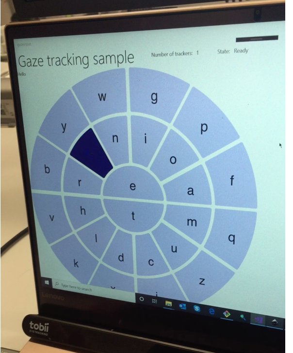
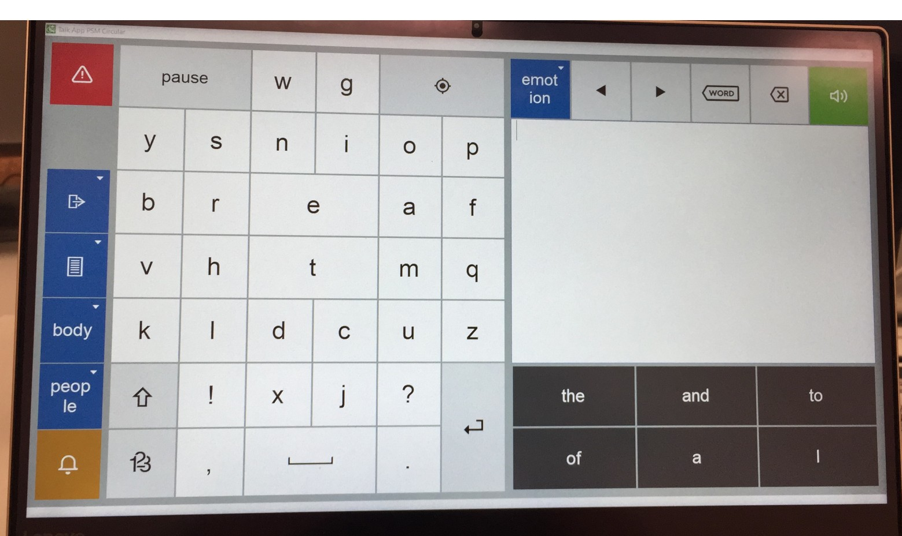
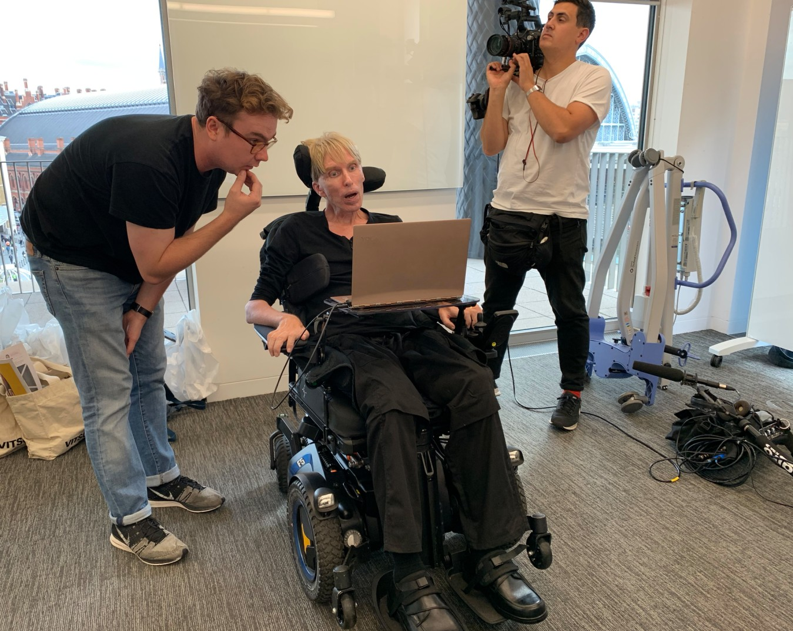

Assistive Context-Aware Toolkit (ACAT) is an open source platform enabling people with motor-neurone disease to have full access to the capabilities of their computers through very constrained interfaces. The open source system was originally developed for and used by Stephen Hawking.
In 2019, Fjord and Intel Labs partnered to design & develop a new interface for ACAT. We wanted to explore and implement eye-tracking to enable quicker typing and ease of navigating around the interface, which previously used a timed, looping menu selection interaction pattern actuated by computer vision or micro-movement sensors.
I worked as part of a small cross-disciplinary team over four months. I was responsible for rapidly prototyping a new circular keyboard design. These prototypes were used to consistently test and refine our ideas through research, testing and ideation sessions with a od variety subject matter experts across voice modelling, avatar creation, text recommendation & eye interaction.
Prototype iteration
As the project progressed, I was responsible for implementing the final designs of the circular keyboard UI and UX components as well as a set of useful new features. I worked as the bridge between UI / UX designers and software engineers to ensure we could implement our new features into the legacy WinForms .NET codebase reliably, while retaining our fundamental design approaches. It was vital to ensure rapid sentence creation was possible with minimal eye-strain and of course implementing a clean, attractive interface design suitable for all-day use.
Nearing final implementation
One of the people we tested and ideated ACAT 2.0 with was Peter Scott-Morgan, an English-American roboticist who is leveraging new technology in order to THRIVE with MND. We worked to a very tight deadline to ensure Peter could use the software after scheduled Layrectomy surgery. We shipped on time and Peter uses ACAT 2.0 as his primary means of communication.
Press
Peter: The Human Guinea Pig (late 2020) - Channel 4 Documentary
Terminally ill scientist 'transforms himself into world's first full cyborg - The Independent
I’m dealing with motor neurone disease by becoming a cyborg - The Times
Handing Peter final version
